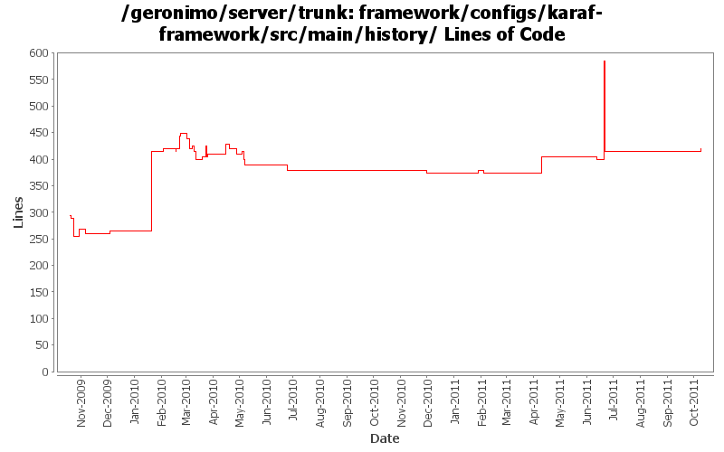

[root]/framework/configs/karaf-framework/src/main/history

| Author | Changes | Lines of Code | Lines per Change |
|---|---|---|---|
| Totals | 50 (100.0%) | 688 (100.0%) | 13.7 |
| rwonly | 3 (6.0%) | 195 (28.3%) | 65.0 |
| genspring | 2 (4.0%) | 155 (22.5%) | 77.5 |
| gawor | 25 (50.0%) | 147 (21.4%) | 5.8 |
| rickmcguire | 7 (14.0%) | 76 (11.0%) | 10.8 |
| djencks | 8 (16.0%) | 67 (9.7%) | 8.3 |
| violalu | 1 (2.0%) | 35 (5.1%) | 35.0 |
| xuhaihong | 3 (6.0%) | 11 (1.6%) | 3.6 |
| kevan | 1 (2.0%) | 2 (0.3%) | 2.0 |
update dependencies.xml files
9 lines of code changed in 1 file:
Update dependencies.xml file, including bval and commons-jexl changes
5 lines of code changed in 1 file:
update osgi dependencies
2 lines of code changed in 1 file:
GERONIMO-5764 fix the cyclic reference and add ASF license header
0 lines of code changed in 1 file:
GERONIMO-5764 Support Bundles Deployment
186 lines of code changed in 1 file:
GERONIMO-6003 Remove unnecessary classpath configurations, since now Geronimo directly keeps the entry point class in the script files
0 lines of code changed in 1 file:
GERONIMO-5885 Upgrade karaf from 2.1.2 to 2.2.1-SNAPSHOT
35 lines of code changed in 1 file:
remove some unused dependencies
0 lines of code changed in 1 file:
GERONIMO-5779: Karaf shell command for diagnosing resolver problem (for Equinox only)
5 lines of code changed in 1 file:
GERONIMO-5702: Update for Karaf 2.1.2. Based on patch from Viola Lu
90 lines of code changed in 1 file:
GERONIMO-5190 use openejb-jee jaxb tree for spec dds
5 lines of code changed in 1 file:
don't need karaf.admin at this point
0 lines of code changed in 1 file:
The java ee concurrent JSR appears dead, and this code has some serious problems
within an OSGi environment. Removing this from the base Geronimo server because
of these issues. If the concurrent support ever becomes real, hopefully the split
package problems will be fixed in the final spec.
5 lines of code changed in 1 file:
don't need management either
0 lines of code changed in 1 file:
geronimo controls login modules so no need for karaf.jaas.modules
0 lines of code changed in 1 file:
no need for karaf.main or karaf.client
0 lines of code changed in 1 file:
Geronimo branding for Karaf shell
5 lines of code changed in 1 file:
use 1.6 version of bundlerepoistory and make sure felix core & compendium bundles are not included with the framework
0 lines of code changed in 1 file:
install & start aries jmx bundles in rmi-naming plugin
0 lines of code changed in 1 file:
GERONIMO-5092 corba plugins start, handle delegate gets into jndi, doesn't seem to break ejbs
20 lines of code changed in 1 file:
Switch to latest stax spec level
1 lines of code changed in 1 file:
Fix stax/jaxb problems when starting the framework assembly.
10 lines of code changed in 1 file:
dependencies updates
0 lines of code changed in 1 file:
GERONIMO-5201 Repace service versions of spec bundles with Geronimo latest versions.
40 lines of code changed in 1 file:
dependencies updates
5 lines of code changed in 1 file:
synch with latest aries code
0 lines of code changed in 1 file:
don't include junit in our server
0 lines of code changed in 1 file:
update karaf dependencies.xml
5 lines of code changed in 1 file:
remove some non-bundle dependencies
0 lines of code changed in 1 file:
switch to asm 3.2 - framework builds and starts now
5 lines of code changed in 1 file:
use felix obr api instead of osgi api
0 lines of code changed in 1 file:
update dependencies for obr addition
5 lines of code changed in 1 file:
GERONIMO-4931 prepare for amq under blueprint by moving to latest karaf using aries blueprint
36 lines of code changed in 1 file:
updates to get trunk building again
5 lines of code changed in 1 file:
GERONIMO-4971 fix (I hope) dependency changes from the previous mistaken commit
1 lines of code changed in 1 file:
GERONIMO-5057 Use those xmlbeans generated by JAVA EE 6 schema files
6 lines of code changed in 1 file:
GERONIMO-4948 To migrate existing geronimo gshell commands to karaf based shell. ----> Adding the dependencies to karaf-framework so that other assemblies can pick up shell-base and deploy-tools modules.
150 lines of code changed in 1 file:
GERONIMO-4973 Classpath entrys in karaf-client.jar is ../system/ instead of ../repository/, bundles might not be the best place to put karaf-client. But let's put it here for now.
5 lines of code changed in 1 file:
some more logging updates: 1) use geronimo log4j.properties files to configure logging, 2) expose service to configure logging programtically, 3) remove unused geronimo-logging module
5 lines of code changed in 1 file:
don't need commons-cli bundle, latest release is osgi-ified. Straighten out a couple dependencies. Tests fail but builds through to tomcat clustering for me
5 lines of code changed in 1 file:
(9 more)